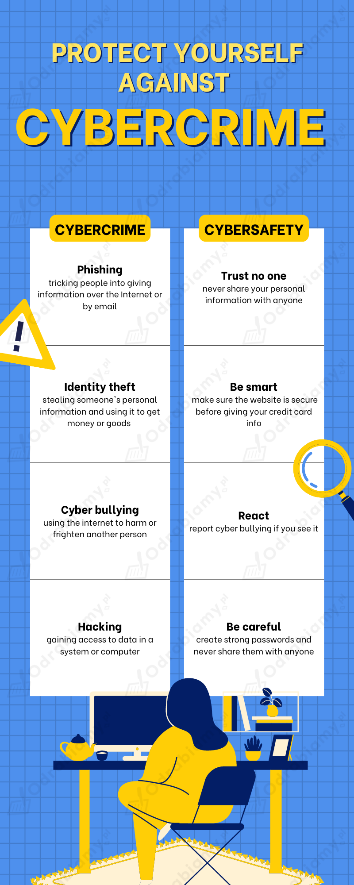

Poniżej przedstawiona jest przykładowa odpowiedź do tego zadania. Każdy uczeń może rozwiązać je w inny sposób. Poniższe rozwiązanie traktuj jako wzór, na podstawie którego stworzysz własną odpowiedź.
1. Some of the cybercrimes I know are: stealing credit card information, identity theft, cyberbullying or harassment, hacking into a government website, and creating software that steals data from users.
(Niektóre z cyberprzestępstw, które znam, to: kradzież danych kart kredytowych, kradzież tożsamości, cyberprzemoc lub nękanie, włamanie na rządową stronę internetową i tworzenie oprogramowania, które kradnie dane od użytkowników.)
2. I don't know a victim of cybercrime personally, but I've heard lots of stories about people who got scammed or who downloaded malware. The media report these cases very often because cybercrime is a big problem nowadays.
(Nie znam osobiście ofiary cyberprzestępstwa, ale słyszałem/am wiele historii o osobach, które zostały oszukane lub pobrały złośliwe oprogramowanie. Media bardzo często informują o takich przypadkach, ponieważ cyberprzestępczość jest obecnie dużym problemem.)
3. There are multiple strategies you can use. For example, you can use strong passwords, avoid sharing personal information online, never click on links sent from unknown email addresses or accounts, use good antivirus software, and stay away from suspicious websites.
(Istnieje wiele strategii, z których można skorzystać. Można na przykład używać silnych haseł, unikać udostępniania danych osobowych online, nigdy nie klikać linków wysyłanych z nieznanych adresów e-mail lub kont, korzystać z dobrego oprogramowania antywirusowego i trzymać się z dala od podejrzanych stron internetowych.)
Uwaga! Rozwiązanie przykładowe. Wstawione odpowiedzi zostały pogrubione w tłumaczeniu.
1. click
2. attachment
3. phishing
4. protect
5. login
6. fraudster
7. junk
8. cyber bullying
spam, con (someone), hacker, identity theft
Tłumaczenie:
Misja "Babć-oszustek" była prosta: oszukać własne wnuki! Chciały pokazać, jak łatwo każdy może stać się ofiarą internetowego oszustwa. Najpierw Babcie-oszustki nauczyły się tworzyć fałszywe adresy mailowe. Następnie namówiły swoje wnuki, by kliknęli na link lub otworzyli załącznik. Cztery z pięciu osób padło ofiarą ich wyłudzeń!
Aby ochronić się przed Babciami-oszustkami (lub innymi oszustami internetowymi):
• nigdy nie podawaj swoich pełnych danych logowania - każdy może być potencjalnym oszustem lub naciągaczem
• nigdy nie wyłączaj filtrów spamu ani niechcianych materiałów reklamowych
• nękanie w sieci jest przestępstwem - jeśli je zauważysz, zgłaszaj!
Pamiętaj: jeśli coś wygląda na zbyt piękne, by było prawdziwe, to pewnie takie jest!
|
Verb (czasownik) |
Noun (crime) (rzeczownik - przestępstwo) |
Noun (person) (rzeczownik - osoba) |
| to bully (dręczyć) |
bullying (dręczenie) |
bully (bullies) (dręczyciel/dręczyciele) |
| to commit fraud (popełnić oszustwo) |
fraud (oszustwo) |
fraudster(s) (oszust/oszuści) |
| to con (okantować) |
a con (przekręt) |
conman (conmen) (kanciarz/kanciarze) |
| to hack (hakować) |
hacking (hakerstwo) |
hacker(s) (haker/hakerzy) |
| to scam (naciągać) |
scam (oszustwo, szwindel) |
scammer(s) (naciągacz/naciągacze) |
Tematy pojawiające się w nagraniu:
- cyber bullying
- hacking
- online fraud
- phishing scams
1 - b
("Co za wspaniały pomysł - świetna robota!" - aby złożyć gratulacje)
2 - d
("To okropne! Chciał(a)bym, żebyś przestał/a..." - aby się poskarżyć)
3 - a
("Na twoim miejscu, trzymał(a)bym się z dala od..." - aby coś odradzić)
4 - e
("Sądzę, że powinieneś/powinnaś..." - aby zasugerować zmiany)
5 - c
("Na tej stronie internetowej można znaleźć wiele szczegółów". - aby podać informacje)
| Jake | Eliza | Shakir | Moira | Maxi |
| E |
F | C | A | D |
B
Przykładowa odpowiedź:
Eliza and Shakir were victims of cybercrime.
Eliza was scammed on social media and all of her friends got fake messages. Shakir got his phone hacked because he used a public wi-fi hotspot.
Poniżej przedstawiona jest przykładowa odpowiedź do tego zadania. Każdy uczeń może rozwiązać je w inny sposób. Poniższe rozwiązanie traktuj jako wzór, na podstawie którego stworzysz własną odpowiedź.
I think their method was effective because it showed people how easy it is to become a victim of cybercrime. It must have been shocking, too, which means it will be easier to remember.
Other effective ways of teaching young people cybersafety are:
- creating school programmes for teens;
- collaborating with influencers to reach more people;
- having free online courses.
Tłumaczenie:
Myślę, że ich metoda była skuteczna, ponieważ pokazała ludziom, jak łatwo jest stać się ofiarą cyberprzestępczości. Musiało to być również szokujące, co oznacza, że łatwiej będzie to zapamiętać.
Inne skuteczne sposoby uczenia młodych ludzi cyberbezpieczeństwa to:
- tworzenie programów szkolnych dla nastolatków;
- współpraca z influencerami w celu dotarcia do większej liczby osób;
- prowadzenie bezpłatnych kursów online.
Poniżej przedstawiona jest przykładowa odpowiedź do tego zadania. Każdy uczeń może rozwiązać je w inny sposób. Poniższe rozwiązanie traktuj jako wzór, na podstawie którego stworzysz własną odpowiedź.
Rozwiązanie na obrazku:

Tłumaczenie:
|
Chroń się przed cyberprzestępstwami |
||
|
Cyberprzestępstwa Phishing: nakłanianie ludzi do podawania informacji przez Internet lub pocztę elektroniczną. Kradzież tożsamości: kradzież czyichś danych osobowych i wykorzystanie ich do zdobycia pieniędzy lub towarów. Cyberprzemoc: wykorzystywanie internetu do krzywdzenia lub straszenia innych osób Hakowanie: uzyskiwanie dostępu do danych w systemie lub komputerze |
|
Cyberbezpieczeństwo Nie ufaj nikomu: nigdy nie udostępniaj nikomu swoich danych osobowych Postępuj mądrze: przed podaniem danych karty kredytowej upewnij się, że witryna jest bezpieczna. Reaguj: zgłaszaj cyberprzemoc, jeśli ją zauważysz
|
Poniżej przedstawiona jest przykładowa odpowiedź do tego zadania. Każdy uczeń może rozwiązać je w inny sposób. Poniższe rozwiązanie traktuj jako wzór, na podstawie którego stworzysz własną odpowiedź.
I haven't found any Polish websites for cybercrime victims, only some articles. If you're a victim of cybercrime in Poland, you should just call a lawyer or report it to the police.
One English website for cybercrime victims I've found is fbi.gov. It lets people report cyber crime, and it's a government website, so I think it's safe. I wouldn't use it, though, because I'm not a US citizen. However, it contains some useful tips.
Another website I found is thecyberhelpline.com. It says it specialises in helping victims of cyber crime, but I'm not sure how official it is. I wouldn't use it if I needed help either. I think I would simply try to get free legal advice instead.
Tłumaczenie:
Nie znalazłem/am żadnych polskich stron internetowych dla ofiar cyberprzestępstw, jedynie kilka artykułów. Jeśli jest się ofiarą cyberprzestępstwa w Polsce, należy po prostu zadzwonić do prawnika lub zgłosić sprawę na policję.
Jedna angielska strona dla ofiar cyberprzestępstw, którą znalazłem/am, to fbi.gov. Umożliwia ona zgłaszanie cyberprzestępstw i jest stroną rządową, więc myślę, że jest bezpieczna. Nie korzystał(a)bym z niej jednak, ponieważ nie jestem obywatelem/ką USA. Zawiera jednak kilka przydatnych wskazówek.
Inną stroną, którą znalazłem/am, jest thecyberhelpline.com. Podaje ona, że specjalizuje się w pomocy ofiarom cyberprzestępstw, ale nie jestem pewny/a, na ile jest oficjalna. Nie skorzystał(a)bym z niej, gdybym potrzebował pomocy. Myślę, że zamiast tego spróbował(a)bym po prostu uzyskać bezpłatną poradę prawną.